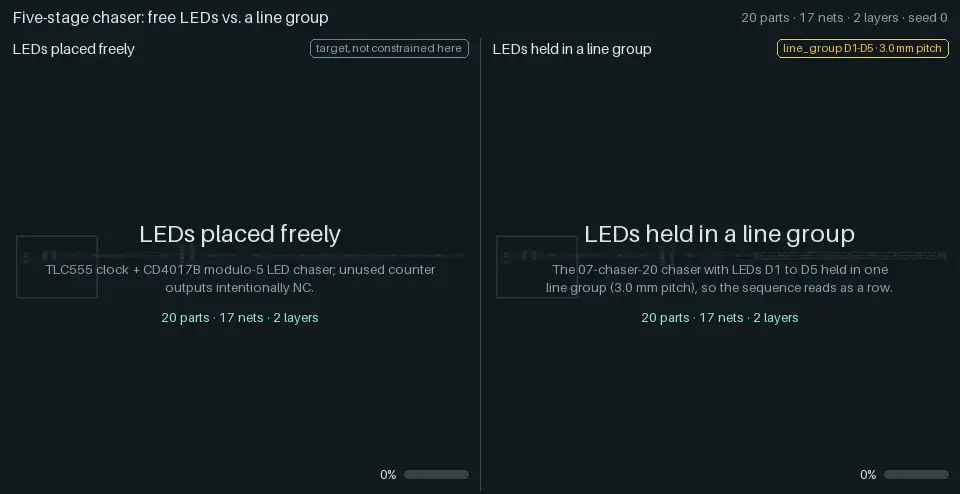
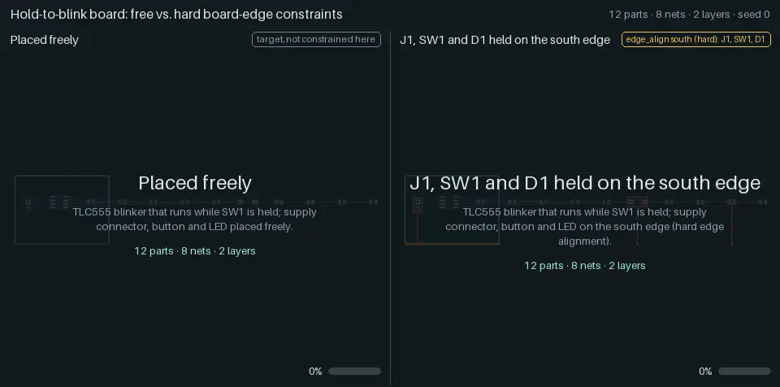
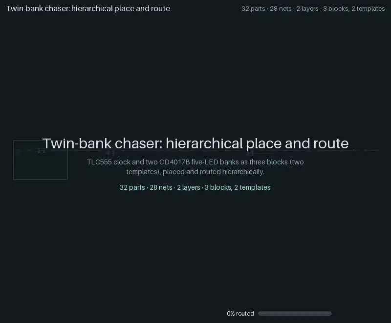

Constraints and hierarchy¶
Three showcases of how yapnr handles what a human would ask of a layout: a row of LEDs that reads as a row, connectors and buttons on the board edge, and a board built from reusable blocks. Each animation is recorded engine state, like the regression ladder’s: global placement snapshots, the legalizer’s order, every net the router commits, the saved KiCad boards and KiCad’s verdict.
The showcase cases (designs.showcases() in
hardware/pnr/regression/designs.py) run through the ladder’s runner and its gate, but
they are not ladder cases: they sit outside the ladder’s gate and its pull-request lane (the
nightly lane runs them for information). All five cases below come from one traced run: seed 0,
a placement snapshot every 5 iterations, the legacy fabrication profile, KiCad 10.0.6 on the
development Mac (darwin-arm64). The four flat cases use the initial placement pool (8 starts, 3
routed finalists); the hierarchical case uses its own block trials and four top-level seeds.
Every case passes the gate: 100 % routed, no open connections and no findings in KiCad’s DRC.
Line groups¶

The five-stage chaser (07-chaser-20: a TLC555 clocking a CD4017B that drives five LEDs) twice,
on the same board, with the same seed and budgets. On the left the LEDs are free; on the right,
line-chaser-20 holds D1 to D5 in one line group, the only difference:
line_group:
- name: chaser_leds
members: [D1, D2, D3, D4, D5] # in order along the line
pitch_mm: 3.0 # centre to centre
rot: 90 # each LED's rotation in the line's frame
reason: Chaser LEDs in one row, so the sequence reads as a line
A line group is a hard constraint. The placer sees it as one rigid part (a macro: the members’ courtyards and pads in the line’s frame), so global placement moves and turns the whole line and the legalizer places it in one step; afterwards the members are posed from the line’s pose.
What to watch:
Global placement: the dashed rectangle is the rigid line. It slides as one body while the other parts spread around it. The placer’s rotation is a four-way choice, and here it keeps the line vertical, flipping it end for end a few times (a half-turn is drawn as a flip: the engine records only the chosen direction, never the angles in between).
Legalization: the line is placed in one step, not five (15 steps instead of 19).
The pool’s shortlist: the eight starts put the line in different places and directions (vertical in seven starts, horizontal in one, both ways round).
The caption strips: HPWL (the half-perimeter wirelength of every net, from the frame’s poses) and the “LED line error”, the largest distance of D1 to D5 from their best-fit line. On the left the dashed path through D1 to D5 shows where the sequence goes; its error ends at 6.85 mm. On the right it is 0.00 mm throughout.
Case |
Parts |
Routed |
Opens |
Findings |
Vias |
Copper (mm) |
HPWL (mm) |
Time (s) |
|---|---|---|---|---|---|---|---|---|
|
20 |
100 % |
0 |
0 |
19 |
310.75 |
271 |
114.3 |
|
20 |
100 % |
0 |
0 |
20 |
322.49 |
272 |
121.6 |
The line costs one via, 12 mm of copper and 1 mm of HPWL here. Caveats: a line turned by 180° reverses the sequence on the board, which a human would accept either way, so the placer may choose either direction (near the end of global placement its choice can flip between the two). Only the LEDs are grouped; their resistors stay free (a rigid LED-and-resistor row is a follow-up).
Board edges¶

A “hold to blink” board (a TLC555 astable that runs while pushbutton SW1 is held), twice. On the
right, edge-io-12 holds the supply connector J1, the button SW1 and the LED D1 on the south
edge, each turned so that its long axis runs along the edge; the order along the edge is left to
the placer. On the left, edge-io-12-free drops those constraints. Nothing else is fixed.
edge_align:
J1: { edge: south, hard: true, tolerance_mm: 1.0 }
SW1: { edge: south, hard: true, tolerance_mm: 1.0 }
D1: { edge: south, hard: true, tolerance_mm: 1.0 }
orientation: # the facing is set by the orientation constraint
J1: 90
SW1: 0
D1: 0
edge_align pulls a part towards its edge during global placement. With hard: true the
legalizer also keeps it within tolerance_mm of the edge, and the legality checks and feedback
moves respect it.
What to watch:
Tethers: a line from each held part to the edge, red while it is farther than its tolerance, mint once it is within it. During global placement the pull is soft, so parts approach the edge; the legalizer’s band then holds them there.
The order along the edge: the caption strip reads it live (“south: D1 · J1 · SW1”). In the start the animation follows, the order stays D1, J1, SW1: the parts approach the edge and SW1 slides about 4 mm along it. The order changes in other starts, so the shortlist first replays the global placement of all eight starts side by side (recorded snapshots, one clock), with each tile’s order under it: in three starts two edge parts pass each other during global placement, and in two the legalizer changes the order. The tiles then hold each start’s legalized order: four different orders among the eight.
The free board: the dashed edge is the other board’s target, drawn for reference; “on edge 0 of 3” counts its parts within 1 mm of it. In the start it follows, D1 and three other parts stay off the board until the legalizer places them, so the camera widens over its global placement and zooms back to the board after legalization.
Case |
Parts |
Routed |
Opens |
Findings |
Vias |
Copper (mm) |
HPWL (mm) |
Time (s) |
|---|---|---|---|---|---|---|---|---|
|
12 |
100 % |
0 |
0 |
9 |
176.87 |
139 |
61.9 |
|
12 |
100 % |
0 |
0 |
8 |
198.47 |
169 |
34.2 |
Holding the three parts on the edge costs 30 mm of HPWL and 22 mm of copper, and saves a via.
Hierarchical place and route¶

hier-twin-bank-32: a TLC555 clock driving two identical CD4017B banks of five LEDs, 32 parts on
a 56 × 40 mm board. Each part carries an atopile-style address (top.clock.u,
top.bank_a.r0, …), from which the engine derives three blocks and two templates: the two
banks share one template. Only VCC, GND and CLOCK cross block boundaries.
What to watch:
Blocks. Each template is placed and routed on its own board, in eight trials (two seeds on each of four outlines); the tiles replay each template’s chosen trial side by side, at one scale. The bank template’s trials follow with their rank (opens, port debt, area, vias, copper), and both banks reuse the chosen layout: one layout, two instances.
Top level. The blocks become rigid macros (their outline is dashed) and move onto the board; the top-level placer places them like parts, moving a whole block with its copper and flipping it end for end (the placer records a block only at 0° or 180° here; a half-turn is drawn as a flip), and legalizes one macro per step.
Knitting. The block copper is kept as it is (drawn dimmed): the progress bar starts at the 50 of 60 connections the blocks already make. The router adds the nets between blocks, the connector and the bulk capacitor (full colour). Four top-level seeds were knitted; their montage follows, then KiCad’s writeback, planes, zone refill and verdict.
Case |
Parts |
Routed |
Opens |
Findings |
Vias |
Copper (mm) |
HPWL (mm) |
Time (s) |
|---|---|---|---|---|---|---|---|---|
|
32 |
100 % |
0 |
0 |
38 |
598.02 |
437 |
175.5 |
What is interpolated¶
Every frame is either recorded engine state or a labelled transition between two recorded states:
Placement snapshots. Positions between two recorded global placement snapshots are interpolated linearly, as in the ladder’s animations.
Rigid bodies. A line group or a block macro moves as one: its centre is interpolated linearly and its angle along the shorter arc between two snapshots, and its members are posed from that pose (never one by one, which would shrink a line mid-turn). A half-turn has no shorter arc, and the placer records only its snapped four-way choice, so a body (or, in these animations, a single part) recorded at opposite angles flips at the middle of the interval: a half-turn is shown as a flip, not a rotation.
The camera. When recorded poses leave the board during global placement, the camera widens over all of that placement’s snapshots and zooms back to the board after legalization.
The pool replay (board edges). The shortlist’s tiles replay each start’s recorded global placement snapshots on one clock, then show its legalized placement in one step.
The lift (“Blocks become macros”, 0.8 s). The blocks move from their display layout to their first recorded macro poses; the connector and the bulk capacitor fly in from the unplaced row. The display layout before it (the blocks side by side, without the board) is a presentation, not a placement.
Comparisons. The two halves are synchronized scene by scene; the shorter half holds its last frame of a scene until the other catches up.
Nothing else is invented: no easing of the engine’s order, no reordering, no copper the engine did not commit. The caption metrics (HPWL, LED line error, parts on their edge and their order) are computed from the poses on screen.
Regenerating¶
The showcase run needs what the ladder needs (a numerical Python, KiCad 10 with its Python module and footprint library; see Regression ladder). The hierarchical case takes about three minutes on the development Mac.
# 1. The showcase run (07-chaser-20 and the four showcase cases); the output must not exist.
"$NUMERIC_PYTHON" hardware/pnr/regression/run.py --repo . --out .yapnr/ladder/SHOWCASES \
--seed 0 --trace --trace-placement-every 5 --initial-pool --initial-starts 8 \
--initial-finalists 3 --timeout 1200 --showcases \
--case 07-chaser-20 --case line-chaser-20 --case edge-io-12-free --case edge-io-12 \
--case hier-twin-bank-32 \
--python "$NUMERIC_PYTHON" --kicad-python "$PNR_KICAD_PYTHON" \
--kicad-cli "$PNR_KICAD_CLI" --library "$PNR_KICAD_FOOTPRINTS"
# 2. Render the four files into docs/animations/ and their manifest and results entries.
bazel run //hardware/pnr:showcase_animations -- --render-only "$PWD/.yapnr/ladder/SHOWCASES"
One comparison of any two traced runs renders with
bazel run //hardware/pnr:animate -- --compare LEFT RIGHT --out FILE.webp --labels A B (a trace,
a case directory or RUN_DIR:CASE each; --replay-pool replays the pool’s starts in the
shortlist, as the board-edge file does); a hierarchical case directory renders like any other
case (--pacing showcase gives placement and routing more time). Budgets: 2.5 MB per WebP (the
hierarchical one 3.5 MB), 5 MB per GIF, 30 MB for docs/animations/ in all
(tests/unit/repo/test_animations.py). The provenance of each file (the run’s engine commit,
sources_sha256, trace and content hashes) is in the showcases entries of
animations/manifest.json, and the cases’
results in the showcases array of
animations/ladder-results.json. The
design is Design: line groups, board edges and hierarchical PnR, animated.